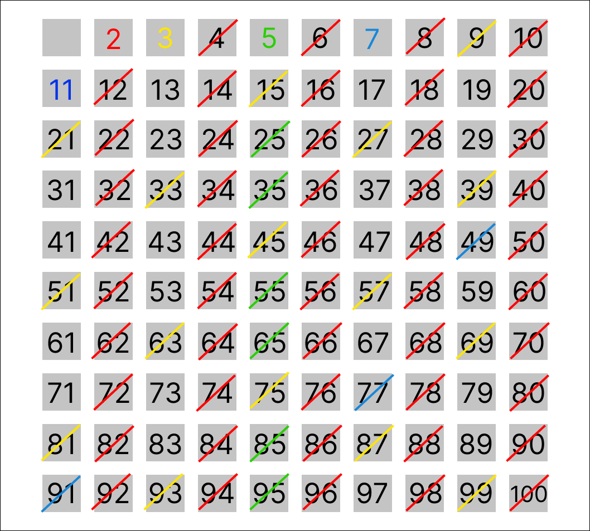
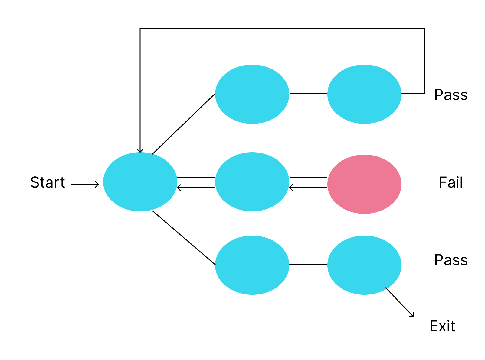

is an algorithm for traversing a tree. It starts traversing from the root node and explores as far as possible along each branch before backtracking. Usually uses stack to find the shortest path. In general, DFS is faster than BFS.
Time complexity: O(V+E)

is an algorithm for searching a tree. It starts traversing from the root node and explores all nodes at the present depth prior to moving on to the nodes at the next depth level. Extra memory, usually a queue, is needed to keep track of the child nodes that were encountered but not yet explored. It is usually a better option when target is closer to source.
Time complexity: O(V+E)

is a method used to find all the prime numbers up to a limit number(N). It adds all the numbers in a range as a prime number. Starting from smallest prime number, 2, it removes multiple of each prime number(i). When i reaches sqrt(N) or bigger, all the numbers remaining are defined as prime number.
Time complexity: O(N log (log N))
is a problem-solving technique that enumerates all the possible candidates for the solution. It checks each candidate if it satisfies problem's requirements. In general, Brute-force is easy to implement, but becomes inefficient as the number of possible candidates increases
Time complexity: O(mn)

is a problem-solving algorithm that recursively goes through candidates and returns to initial position if the candidate do not satisfy the condition.